變更視窗樣式
Java 內建視窗樣式
底下程式示範將視窗更換為 Metal 樣式：
顯示結果：
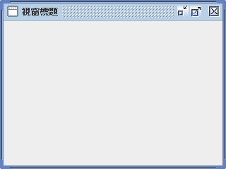
其它內建的視窗樣式還有如下，請自行嘗試：
com.sun.java.swing.plaf.gtk.GTKLookAndFeel
com.sun.java.swing.plaf.mac.MacLookAndFeel
com.sun.java.swing.plaf.motif.MotifLookAndFeel
com.sun.java.swing.plaf.nimbus.NimbusLookAndFeel
com.sun.java.swing.plaf.windows.WindowsClassicLookAndFeel
com.sun.java.swing.plaf.windows.WindowsLookAndFeel
其中 Windows 與 MacOS 並非跨平台的樣式，遇上相異的作業系統無法使用，會改用預設的樣式。因此顧慮跨平台問題的話，也可考慮以下自動處理跨平台問題的樣式：
UIManager.getSystemLookAndFeelClassName()
UIManager.getCrossPlatformLookAndFeelClassName()
第三方視窗樣式
網路可以找到不少 Swing 的視窗樣式可以套用，首先推薦 JTatto，因為下載這個套件，就能切換十數種樣式[1]，而且每種樣式都經過精心配置，每樣都比其他人的樣式精美。請至官網下載：
https://www.jtattoo.net
目前為止 JTatto 可用的樣式如下：
com.jtattoo.plaf.acryl.AcrylLookAndFeel
com.jtattoo.plaf.aero.AeroLookAndFeel
com.jtattoo.plaf.aluminium.AluminiumLookAndFeel
com.jtattoo.plaf.bernstein.BernsteinLookAndFeel
com.jtattoo.plaf.fast.FastLookAndFeel
com.jtattoo.plaf.graphite.GraphiteLookAndFeel
com.jtattoo.plaf.hifi.HiFiLookAndFeel
com.jtattoo.plaf.luna.LunaLookAndFeel
com.jtattoo.plaf.mcwin.McWinLookAndFeel
com.jtattoo.plaf.mint.MintLookAndFeel
com.jtattoo.plaf.noire.NoireLookAndFeel
com.jtattoo.plaf.smart.SmartLookAndFeel
com.jtattoo.plaf.texture.TextureLookAndFeel
各樣式顯示結果依順序如下：
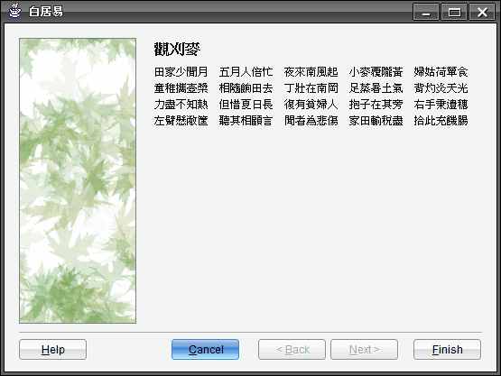
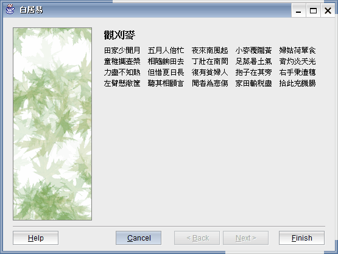
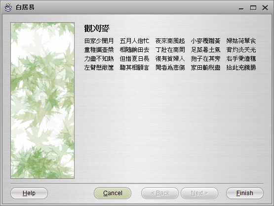
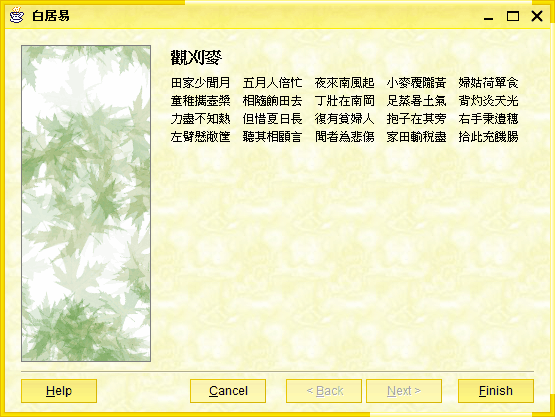
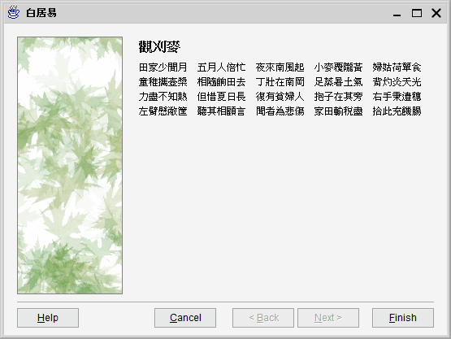
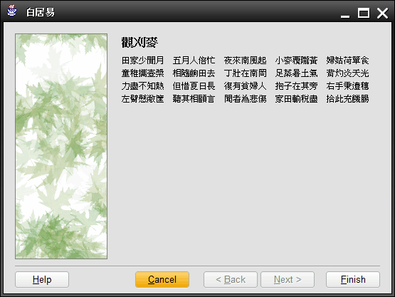
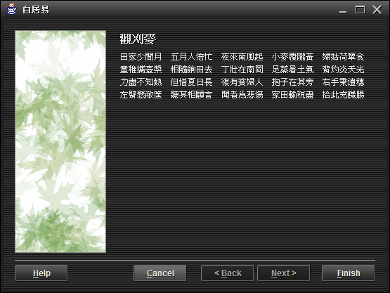
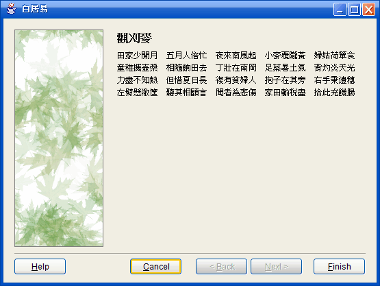
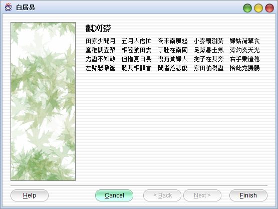
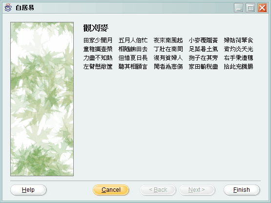
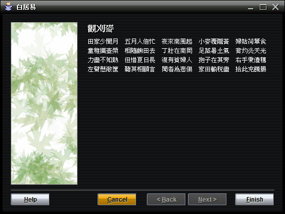
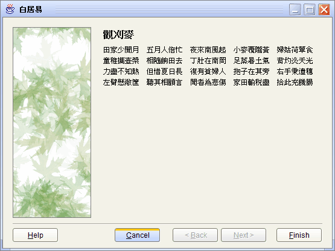
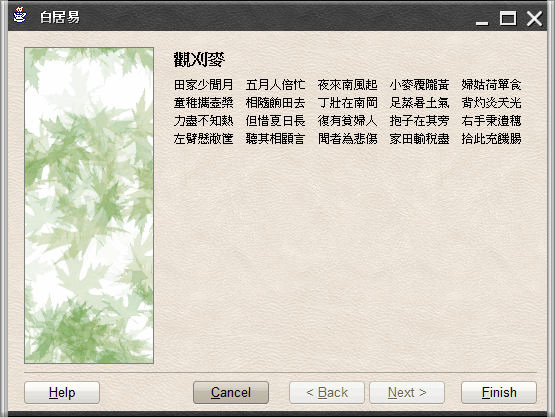